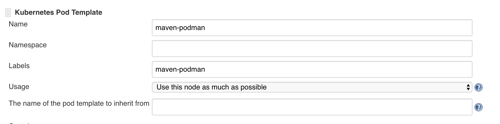
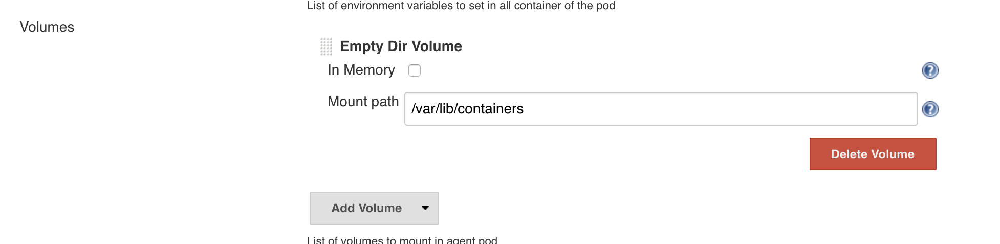
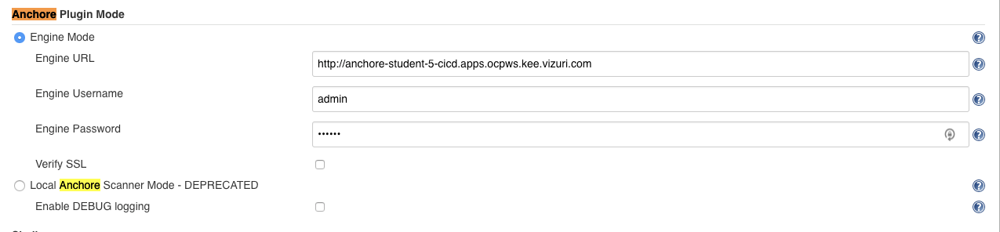
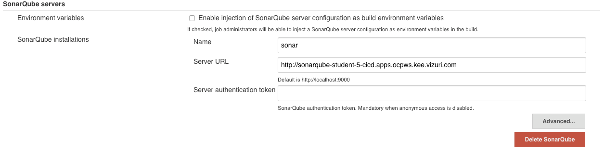
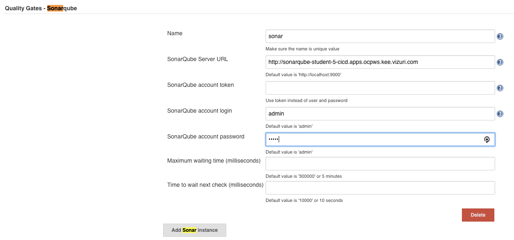
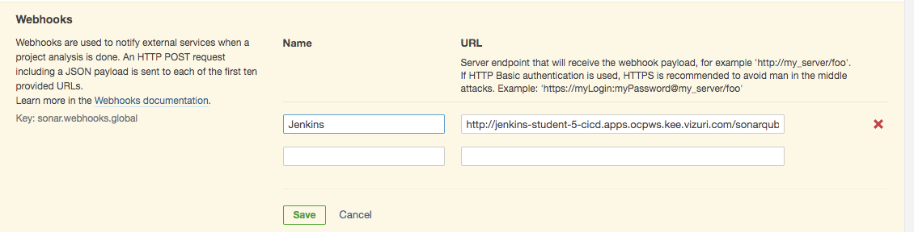

In Jenkins, navigate to Manage Jenkins.
Choose Manage Plugins.
Choose the Available tab.
Install the following Plugins:
* Anchore Container Image Scanner
* Sonar Quality Gates Plugin
* SonarQube Scanner for Jenkins
* xUnit plugin
* Gogs
Choose Install without Restart.
The Kubernetes Cloud plugin allows for the running of Kubernetes/OpenShift PODs as Jenkins JNLP Slaves
The OpenShift Jenkins Template configures a Kubernetes Cloud configuration for the current OpenShift environment. It provides two out-of-the-box Kubernetes Pod Templates to be Jenkins Slaves; maven and nodejs.
Configure Podman Kubernetes Pod Template
We will be using podman to build our container images so we need to include a new Kubernetes Pod Template that includes the podman binary.
The Dockerfile for the podman image can be found here:
https://github.com/Vizuri/openshift-cicd-podman-jenkins-slave
This container extends the OpenShift Maven image and just adds the podman binary.
In Jenkins, navigate to the Manage Jenkins -> Configure System. Scroll down to the Cloud->Kubernetes section.
Notice the provided configuration.
Let’s add our Podman Kubernetes Pod Template.
Click on the Add Pod Template button and choose Kubernetes Pod Template.
Enter the following values:
* Name: maven-podman
* Labels maven-podman

Click on the Add Container button and choose Container Template.
Click the Add Volume button and choose Empty Dir Volume
Enter the following values:

Save your changes.
In Jenkins, navigate to the Manage Jenkins -> Configure System.
Scroll down to the Anchore Plugin Mode
Enter the following values:

Click Save
In Jenkins, navigate to the Manage Jenkins -> Configure System.
Scroll down to the SonarQube servers section.
Click the Add SonarQube button.
Enter the following values:
* Name: sonar
* Server URL: http://sonarqube-student-55-cicd.apps.ocpws.kee.vizuri.com

Scroll down to the Quality Gates SonarQube
Click the Add Sonar Instance button
Enter the following values:

Click the Save button
Login into your SonarQube Server.
http://sonarqube-student-55-cicd.apps.ocpws.kee.vizuri.com
Click the Login button and enter
And press the Login button.
Click skip this tutorial on the pop-up.
Click on Administration and then choose WebHooks.
Enter the following values:
* Name: Jenkins
* URL: http://jenkins-student-55-cicd.apps.ocpws.kee.vizuri.com/sonarqube-webhook/

Click Save